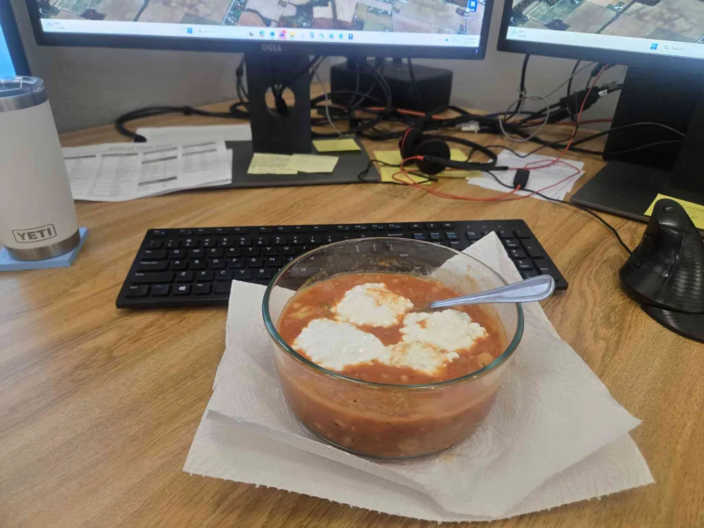

Credit to internet funnyman Ben Wheeler for the recipe
1 cup Cannelini Beans
250g Grape Tomatoes
1 cup Crushed Tomatoes
6 crushed cloves of Garlic
50g of diced (red/white) Onions
50g of Spinach
1/4 cup Cream
1/4 cup Cottage Cheese
Crushed Red Pepper
2 Tbsp Dried Basil
Salt/Pepper
Heat up olive oil in pot and cook onions, garlic and crushed red pepper until fragrant and slightly translucent.
Cut grape tomatoes into halves, add to pot. Cook them until they begin to break down, but still retain their shape.
Add crushed tomatoes and dried basil. Cook for 2-3 minutes.
Add beans and small amount of water. Stir, then cover and cook until beans are soft (5-6 minutes).
Remove from heat, add Spinach and let it cool down slighty, before stirring in cream.
Salt and pepper to taste, top with cottage cheese and additional basil or parsley.
Total (4 Servings): 970 Calories, 143 Carbs, 46 Fibre, 52 Protein
Per Serving: 243 Calories, 36 Carbs, 12 Fibre, 13 Protein
